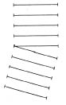
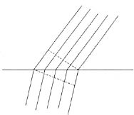
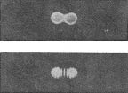
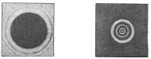

Optik görüngülerin tanımlanmasına neden ara verdiğimizi anımsayalım. Amacımız, cisimcik teorisinden farklı, ama gene de aynı alanın olgularını açıklamaya çalışan başka bir teori ortaya koymaktı. Bunu yapmak için öykümüzü kesmemiz ve dalga kavramını sunmamız gerekti. Şimdi gene konumuza dönebiliriz.
Bu yepyeni teoriyi geliştiren, Newton’un çağdaşlarından Huygens oldu. Işık konusundaki kitapçığında şöyle yazıyordu:
“Bundan başka, ışığın yayılması zaman gerektiriyorsa –ki şimdi bunu araştıracağız– bunun sonucu şu olacaktır: Arasından geçtiği maddenin etkilediği bu hareket, ardışıktır (successive) ve bundan dolayı, ses gibi, küresel yüzeyler ve dalgalar ile yayılır. Suya bir taş atılınca ortaya çıktığı görülen, çemberler biçiminde ardışık bir yayılma gösteren, bununla birlikte başka bir nedenden ileri gelen ve yalnızca düz bir yüzeyde yayılan dalgalara benzedikleri için, onlara dalgalar diyorum.”
Huygens’e göre, ışık bir dalgadır; tözün değil, enerjinin iletilmesidir. Cisimcik teorisinin, gözlenen olguların birçoğunu açıkladığını görmüştük. Dalga teorisi de bunu yapabiliyor mu? Dalga teorisinin de bunu başarıp başarmadığını anlamak için, daha önce cisimcik teorisinin yanıtladığı soruları bir daha sormalıyız. Burada, bunu, N. ile H. arasında geçen bir karşılıklı konuşma ile yapacağız. N., Newton’un cisimcik teorisine, H. ise Huygens’in teorisine inanıyor. Bu iki büyük bilim adamının yaptıkları çalışmaların bitiminden sonra geliştirilmiş kanıtları kullanmalarına izin verilmiyor.
N.: Cisimcik teorisinde, ışık hızının çok belirli bir anlamı vardır. Bu, cisimciklerin boş uzayda yol alma hızıdır. Bunun dalga teorisindeki anlamı nedir?
H.: Bu, elbette ışık dalgasının hızı demektir. Bildiğimiz bütün dalgalar, belirli bir hızla yayılır ve bir ışık dalgası da öyle yayılacaktır.
N.: Bu, göründüğü kadar basit değildir. Ses dalgaları havada, deniz dalgaları suda yayılır. Her dalga için, içinde yol alabileceği maddesel bir ortam olmalıdır. Oysa ışık, sesin geçmediği bir boşluktan geçiyor. Boş uzayda bir dalga varsaymak, gerçekte hiçbir dalga varsaymamaktır.
H.: Evet, bu bir güçlüktür, ama benim için yeni bir şey değildir. Öğretmenim, bu sorunu büyük bir titizlikle düşündü ve biricik çıkar yolun, bütün evreni dolduran saydam bir ortamın, esirin (ether), varsayılı bir tözün bulunduğunu kabul etmek olduğu sonucuna vardı. Evren sanki esirde yüzmektedir. Bir kez bu kavramı ileri sürme yürekliliğini gösterirsek, her şey çok açık ve inandırıcı duruma gelir.
N.: Ama ben, böyle bir varsayıma karşıyım. Çünkü, her şeyden önce, varsayılı yeni bir töz ileri sürüyor; kaldı ki, fizikte pek çok töz var. Buna karşı olmam için başka bir gerekçe daha var. Siz, hiç kuşkusuz, her şeye mekanik bir açıklama bulmak zorunda olduğumuza inanıyorsunuz. Peki, ama, esiri nasıl açıklayacaksınız? Şu basit sorunun yanıtını verebilir misiniz: Esir, kendi temel taneciklerinden nasıl oluşuyor ve öbür görüngülerde kendini nasıl belli ediyor?
H.: Birinci itirazınız kesinlikle haklıdır. Ancak, biz, biraz düzmece olan ağırlıksız esiri ileri sürerek, çok daha düzmece olan ışık cisimciklerinden kurtuluveriyoruz. Tayftaki pek çok renge karşılık olan sonsuz sayıdaki cisimciklerin yerine, bizim yalnız bir tek “gizemli” tözümüz var. Bunun gerçek bir ilerleme olduğunu düşünemez misiniz? Hiç değilse bütün güçlükler bir noktada toplanıyor. Artık farklı renklere özgü taneciklerin boş uzayda aynı çabuklukla yol aldığını söyleyen o uydurma varsayımın gereği yok. İkinci kanıtınız da doğru. Esirin mekanik bir açıklamasını yapamıyoruz. Ama, kuşkusuz, optik görüngülerin ve belki de öbür görüngülerin daha da araştırılması, esirin yapısını açıklayacaktır. Bugün, yeni deneyleri ve sonuçları beklemek zorundayız, ama sonunda, esirin mekanik yapısı problemini çözmeye güç yetireceğiz.
N.: Bugün çözemediğimize göre, bu sorunu şimdilik bir yana bırakalım. Ben, sizin teorinizin, güçlüklerini hesaba katsak bile, cisimcik teorisinin ışığında böylesine açık ve anlaşılır olan görüngüleri nasıl açıkladığını görmek isterim. Örneğin, ışığın boşlukta ya da havada doğru çizgiler boyunca yayılması olgusunu ele alalım. Bir mumun önüne konan bir kâğıt parçasının duvara düşen gölgesi belirgindir ve sınırları kesindir. Işığın dalga teorisi doğru olsaydı, belirgin gölgeler olamazdı, çünkü dalgalar kâğıdın kenarlarında eğrilirdi ve, bundan ötürü, gölgeyi bulandırırdı. Bildiğimiz gibi, küçük bir tekne denizin dalgaları için bir engel değildir; dalgalar, hiçbir iz bırakmadan, teknenin çevresinde kıvrılıverir.
H.: Bu, inandırıcı bir kanıt değil. Bir ırmakta ilerleyen büyük bir teknenin bordasına çarpan kısa dalgaları alalım. Teknenin bir yanında ortaya çıkan dalgalar, teknenin öbür yanından görünmeyecektir. Dalgalar yeterince küçük ve tekne yeterince büyükse, çok belirgin bir iz ortaya çıkar. Işık, dalga-boyu bayağı engellerin ve deneylerde kullanılan deliklerin büyüklüğünün yanında çok küçük olduğu için doğru çizgiler boyunca yol alıyor gibi görünebilir. Yeterince küçük bir engel yaratabilseydik, belki de hiçbir gölge belirmezdi. Işığın eğrilmeye uğrayıp uğramadığını gösterecek aygıtların yapımında büyük deneysel güçlüklerle karşılaşabiliriz. Bununla birlikte, böyle bir deney yapılabilseydi, ışığın cisimcik teorisi ile dalga teorisi arasında kesin bir seçme yapmamızı sağlardı.
N.: Dalga teorisi, gelecekte yeni olgulara varabilir, ama bu teoriyi inandırıcı olarak doğrulayan hiçbir deneysel veri bilmiyorum. Işığın eğrilebildiği deneyle kesin olarak gösterilinceye dek, bana dalga teorisinden daha basit ve bundan dolayı daha iyi gibi gelen cisimcik teorisine inanmamak için hiçbir gerekçe görmüyorum.
Karşılıklı konuşmayı bu noktada kesebiliriz, ama konu hiç de ayrıntılı olarak tartışılmış değildir.
Dalga teorisinin, ışığın kırılmasını ve renklerin çeşitliliğini nasıl açıkladığının gösterilmesi kalıyor. Bildiğimiz gibi, cisimcik teorisi bunu başarabilmektedir, işe kırılma ile başlayacağız, ama önce optikle hiç ilgisi olmayan bir örneği söz konusu etmek yararlı olacaktır.
Geniş bir düzlük var, ve iki adam, eğilip bükülmeyen bir sırığın birer ucundan tutarak, bu düzlükte yürüyor. Başlangıçta dosdoğru ve her ikisi de aynı çabuklukla yürüyorlar. Çabuklukları, ister çok ister az olsun, aynı kaldığı sürece, sırık paralel yer değiştirmelere uğrayacaktır, yani, dönmeyecek ya da yönünü değiştirmeyecektir. Sırığın birbirini izleyen bütün konumları birbirine paraleldir. Ama şimdi, bir an için –bu bir an saniyenin bir kesimi olabilir– iki adamın hareketlerinin aynı olmadığını düşünelim. Ne olacaktır? Besbelli, o an sırasında sırık dönecektir, öyle ki, artık ilk konumuna paralel olarak yer değiştirmeyecektir. Hızlar gene eşit olunca, paralel yer değiştirme eskisinden farklı bir yönde olacaktır. Bu, şekilde açıkça görülmektedir. [Şekil-39] Yön değişmesi, iki adamın hızlarının farklı olduğu zaman aralığında olmuştur.

[Şekil-39
Bu örnek, bir dalganın kırılmasını anlamamızı sağlayacaktır. Esirde yol alan bir düzlem dalga, camdan bir levhaya çarpıyor. Bir sonraki şekilde, uygun genişlikte bir cephe göstererek ilerleyen bir dalga görüyoruz. Dalga cephesi, belirli bir anda esirin bütün parçalarının kesinlikle aynı biçimde davrandığı bir düzlemdir. Hız, ışığın içinden geçtiği ortama bağlı olduğu için, camda, boş uzaydaki hızdan farklı olacaktır. Dalga cephesinin cama girdiği çok kısa sürede, dalga cephesinin farklı kesimlerinin hızları farklı olacaktır. Cama ulaşan kesimin, ışığın camdaki hızı ile yol alacağı, oysa öbür kesimin ışığın esirdeki hızı ile ilerleyeceği açıktır. Cama “dalma” süresinde, dalga cephesindeki bu hız farkından dolayı, dalganın yönü değişecektir. [Şekil-40]
Böylece, yalnız cisimcik teorisinin değil, dalga teorisinin de kırılmanın bir açıklamasına vardığını görüyoruz. Biraz matematik ile birlikte daha titiz bir inceleme, dalga teorisinin yaptığı açıklamanın daha basit ve daha iyi olduğunu ve varsaydığı sonuçların gözlemle tam uyuşma durumunda olduğunu gösterir. Gerçekten, kırıcı bir ortamdan geçen ışının nasıl kırıldığını biliyorsak, nicel düşünme yöntemleri, ışığın o ortamdaki hızını hesaplamamızı sağlar. Dolaysız ölçümler, bu öngörüleri ve böylelikle de ışığın dalga teorisini çok güzel doğrular.

[Şekil-40]
Geriye renk sorunu kalıyor.
Bir dalganın iki sayı ile, hızını ve dalga-boyunu gösteren sayılar ile, belirlendiği unutulmamalıdır. Dalga teorisinin başlıca varsayımı, farklı dalga-boylarının farklı renklere karşılık olduğudur. Türdeş (homogeneous) sarı ışığın dalga-boyu, kızılınkinden ve morunkinden farklıdır. Çeşitli renklere özgü cisimciklerin düzmece ayırımı yerine burada, dalga-boyundaki doğal fark vardır.
Sonuç şudur: Newton’un ışığın ayrılması konusundaki deneyleri, biri cisimcik teorisinin ve öbürü dalga teorisinin dili olmak üzere, farklı iki dilde anlatılabilir. Şöyle ki:
| CİSİMCİK DİLİ | DALGA DİLİ | |
|
Farklı renklere özgü cisimciklerin boşluktaki hızları aynıdır, ama camdaki farklıdır. Ak ışık, tayfta birbirlerinden ayrılan farklı renklere özgü cisimciklerin bir bileşimidir. |
Farklı renklere özgü farklı dalga-boylu ışınlar, esirde aynı hızla, ama camda farklı hızlarla yol alır. Ak ışık, tayfta birbirlerinden ayrılan farklı dalga-boylu bütün dalgaların bir bileşimidir. |
Aynı görüngü üzerine farklı iki teorinin varlığından doğan belirsizliği, her birinin eksik ve değerli yanlarını dikkatle araştırdıktan sonra, birinin üstünlüğüne karar vererek gidermek, akıllıca bir iş olurdu. N. ile H. arasındaki konuşma, bunun hiç de kolay bir iş olmadığını göstermektedir. Bu noktada verilecek karar, daha çok bir hoşlanma sorunu olurdu ve bilimsel kanılara pek dayanmazdı. Newton’un çağında ve ondan sonraki yüz yılı aşkın sürede, fizikçilerin büyük çoğunluğu cisimcik teorisini savundu.
Çok daha sonraki bir çağda, 19. yüzyılın ortasında, tarihin verdiği karar, ışığın dalga teorisinden yana ve cisimcik teorisine karşı bir karar oldu. H., N. ile yaptığı konuşmada, bu iki teori arasında temelli bir karara varmanın deneyle başarılabileceğini belirtmişti. Cisimcik teorisine göre ışık eğrilmez, ve bu teori, keskin gölgelerin varlığını özellikle ister. Öte yandan, dalga teorisine göre, yeterince küçük bir engel hiç gölge düşürmeyecektir. Bu, Young’ın ve Fresnel’in çalışmalarında deneyle gerçekleştirildi ve bundan teorik sonuçlar çıkarıldı.
Daha önce, pek basit bir deney üzerinde durmuştuk. O deneyde, üzerinde bir delik bulunan bir perde, nokta küçüklüğünde bir ışık kaynağının önüne konuyor ve karşı duvarda bir gölge beliriyordu. Işık kaynağının türdeş (homogeneous) ışık saçtığını varsayarak, bu deneyi daha da basitleştireceğiz. Kaynak ne kadar kuvvetliyse, alınan sonuç da o kadar iyi olur. Perdedeki deliği gittikçe küçülttüğümüzü düşünelim. Kuvvetli bir ışık kaynağı kullanırsak ve deliği yeterince küçültmeyi başarırsak, cisimcik teorisinin görüş açısı içinde kavranamayan, yeni ve şaşırtıcı bir görüngü ile karşılaşırız. Artık aydınlık ve karanlık yerler arasında kesin bir sınır yoktur. Işık bir sıra aydınlık ve karanlık halkalarda karanlık çevreye doğru gittikçe ölgünleşir. Halkaların ortaya çıkması, bir dalga teorisinin gerçek ayırıcı özelliğidir. Aydınlık ve karanlık alanların sıra ile değişerek birbirini izlemesi, deneyde biraz değişiklik yapılarak açıklanacaktır. Koyu renkli bir tabaka kâğıt alıyoruz. Kâğıtta, ışığın geçebileceği iki iğne deliği var. Delikler birbirine yakınsa ve çok küçükse, türdeş (homogeneous) ışık kaynağı yeterince kuvvetliyse, duvarda, yanlara doğru gittikçe belirsizleşip karanlıkta yiten aydınlık ve karanlık şeritler belirir. Bunu açıklamak kolaydır. Karanlık bir şerit, iğne deliklerinin birinden geçen bir dalganın çukuru ile, öbüründen geçen bir dalganın tepesinin rastlaştığı ve birbirini giderdiği yerdir. Aydınlık bir şerit ise, iki ayrı delikten geçen dalgaların çukurlarının ya da tepelerinin rastlaştığı ve birbirini pekiştirdiği yerdir. İlk örneğimizdeki aydınlık ve karanlık halkaları açıklamak daha güçtür, ama ilke aynıdır. İki delik olunca aydınlık ve karanlık şeritlerin, bir delik olunca aydınlık ve karanlık halkaların belirdiği unutulmamalıdır; çünkü ileride bunların üzerinde yeniden duracağız. Burada anlatılan deneyler, ışığın kırınımını, ışık dalgasının yoluna küçük delikler ve engeller konunca doğrusal yayılmadan sapmayı göstermektedir.
TABLO-II

(Fotoğrafı çeken: V. Arkadiev)
Yukarıda, iki ışının birbiri ardınca iki iğne deliğinden geçmesinden sonra beliren aydınlık beneklerin bir fotoğrafını görüyorsunuz. (Önce bir iğne deliği açıktır. Sonra o kapatılıp öbürü açılmıştır.) Aşağıda, ışık iki iğne deliğinden de aynı zamanda geçince beliren şeritleri görmekteyiz.

(Fotoğrafı çeken: V. Arkadiev)
Küçük bir engelin çevresinde eğrilen ışığın kırınımı.
Küçük bir delikten geçen ışığın kırınımı.
Biraz matematiğe başvurarak çok daha ileri gidebiliriz. Belirli bir kırınım biçimi elde etmek için dalga-boyunun ne kadar büyük ya da, daha iyisi şöyle diyelim, ne kadar küçük olması gerektiği bulunabilir. Böylece, anlatılan deneyler, kaynak olarak kullanılan türdeş ışığın dalga-boyunu ölçmemizi sağlar. Bu ölçümlerden elde edilen sayıların ne kadar küçük olduğunu göstermek için güneş tayfının iki ucundaki dalga-boylarını, yani kızıl ile morun dalga-boylarını anacağız.
Kızıl ışığın dalga-boyu........... 0,00008 cm’dir.
Mor ışığın dalga-boyu............ 0,00004 cm’dir.
Sayıların bu kadar küçük olmasına şaşmamalıyız. Belirgin gölge görüngülerinin, yani, ışığın doğrusal yayılma görüngülerinin doğada gözlenmesi, çoğunlukla karşılaşılan deliklerin ve engellerin, ışığın dalga-boyuna oranla aşırı büyük olmasındandır. Işık, ancak çok küçük delikler ve engeller kullanılınca dalga niteliğini açığa vurur.
Ama bir ışık teorisi aramanın öyküsü henüz bitmiş değildir. 19. yüzyılın verdiği karar, kesin ve son değildir. Cisimcikler ile dalgalar arasında bir karara varma problemi, artık çok daha derin ve çapraşık bir biçimde, çağdaş fizikçi için de vardır. Dalga teorisinin gösterdiği başarının kuşkulu niteliğini anlayıncaya dek, ışığın cisimcik teorisinin yenilgisini kabul edelim.